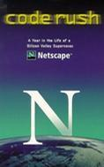
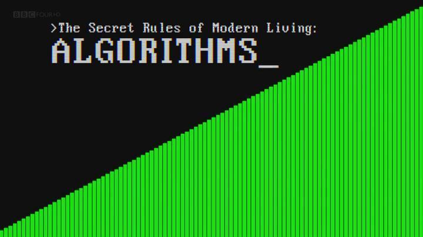
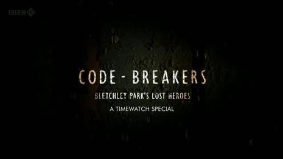
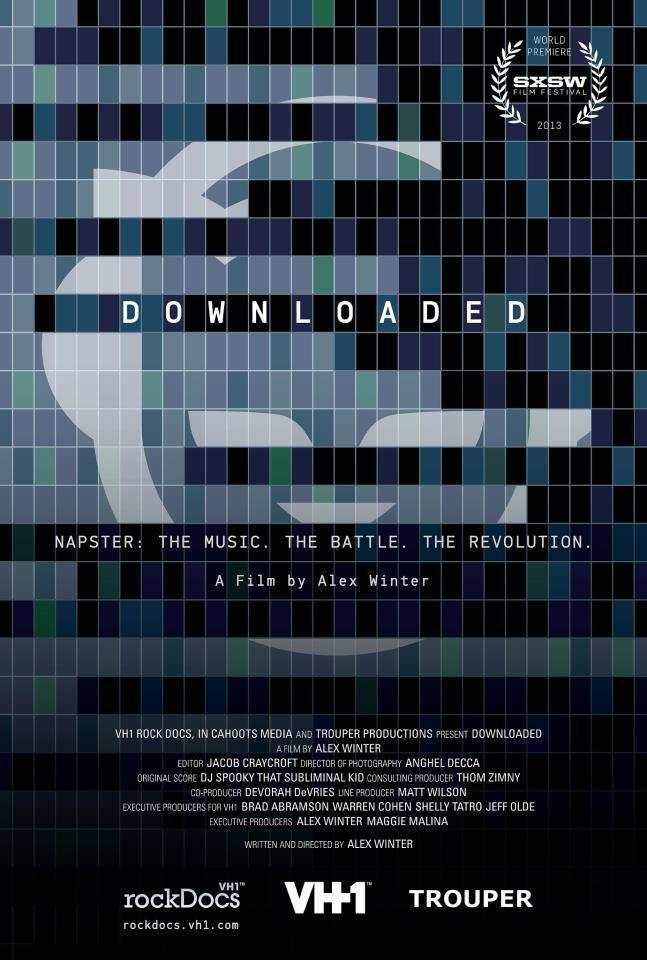

从本文介绍的影片中可以看到各式各样的程序员：他们有的才华横溢，14岁就创造了RSS1.0规格，足迹遍及整个互联网，但英年早逝；有的活在自己世界并坚守着自己的理想，想法不为他人而决定；有的在尽自己最大的努力来挽救公司，永不言弃的精神在影片中体现的淋漓尽致；有的置生死于度外，揭露出鲜为人知的真相...
1、互联网之子(The Internet's Own Boy: The Story of Aaron Swartz)

影片介绍：
斯沃茨很早就参与网络标准的制订，并在14岁就参与创造RSS 1.0规格。 从那时开始他就成为 W3CRDF 核心工作小组的成员，跟John Gruber共同设计了排版语言Markdown（简书使用的编辑器就有Markdown），并参与其他许多计划。 斯沃茨在2006年创办了网ok ever published")。斯沃茨早在 2000 年时就用wiki技术开发了 'theinfo' 百科全书计划。他公司的后台也以 wiki 架设。Swartz曾在斯坦福大学读书，但很快辍学创建Infogami软件公司。Aaron Swartz还是社交新闻网站Reddit的三位创始人之一， 2006年初，Infogami与Reddit合并，并在2006年底被出售给出版公司Condé Nast。Swartz在20周岁生日前出售了他所持有的股份。 Swartz在2006年用wiki技术创办了网上免费图书馆Open Library, 目的是为了让每一本曾经出版过的书都有自己的网页("one web page for every book ever published")。Swartz在2010年创立了反对互联网审查的Demand Progress。这个机构通过Email及其他媒体组织群众，针对特定议题向国会议员及其他意见领袖表达意见、施予压力。2011年7月19日，Swartz因数字偷窃被捕，被控从MIT和JSTOR下载了480万篇学术论文，他在支付10万美元保释金后被释放。Swartz是利用外置硬盘、通过物理接触的方式从MIT内网运行脚本下载JSTOR论文的。2013年1月自杀身亡。
精彩影评：
看到开头不久，他们说，他是一个与世界不太和睦的人，世界对他也不太和睦，当即想到自己，并且，已经猜测到他可能会有抑郁。因为但凡这种才华横溢又与传统不合作的人，要么，成为传奇，要么，成为牺牲品。当然，独享其一的人少，更多的，是两者兼得或两者兼弃的人，比如斯沃茨。
2、独立游戏大电影（Indie Game: The Movie）

影片介绍：
Indie Game: The Movie 独立游戏大电影是一部关于独立游戏的纪录片，讲述独立游戏过往的精彩故事。随着二十一世纪的到来，新的一类独立艺术家诞生了：独立游戏开发者。他们有独立的构思，特别的设计以及个性鲜明的游戏。当然，他们也希望获得成功。影片中，设计师 Edmund McMillen 和程序员 Tommy Refenes 经过两年的努力，等待着他们第一款XBOX的游戏 Super Meat Boy "超级肉食男孩" 的发布。游戏讲述的是一个绷带男孩寻找女友的故事。而在一个名为 PAX 的视频游戏展中，开发者 Phil Fish 则推出了众人翘首以盼的画了四年制作的游戏 FEZ "费兹"。Jonathan Blow 则在考虑继 Braid "时空幻境" 之后的新游戏。而时空幻境曾一度是历史上平均最高的游戏之一。Lisanne Pajot 和 James Swirsky 第一次共同制作了这部电影，他们精心捕捉独立游戏艺术家们奋斗历程的点点滴滴，以及其艺术表现过程中的情感历程。四个开发者，三款游戏，一个终极目标 —— 通过这部纪录片共同表达了出来。
精彩影评：
有一些人，他们也希望赚钱，但他们更多的是凭着理想工作。我们这个社会叫他们理想主义者。他们希望作品能被人认可、被人接受、被人喜欢，但不是这样也没关系，他们会按照自己的理念创作，不会因此改变一分一毫。他们脱离社会，离群索居，只是一心一意沉浸在自己做出的世界中。
3、代码奔腾（Code Rush）

影片介绍：
这是一部讲述Netscape和Mozilla的故事的纪录片。Netscape是一家伟大的公司，它发明了img标签、cookie、ssl安全协议，当然还有如今HTML5时代的明星语言Javascript！但是由于众所周知的原因，它失败了。Netscape最终将浏览器代码开源，这个新项目就是Mozilla！摄制团队横跨了期间重要的几个时间点，整整跟踪了程序员们一年的时间，最终制成这部纪录片。
独立制片人从1998年3月到1999年4月跟随Mozilla的团队，他们曾经曾开发了网景浏览器的源代码，并走向世界，如今在尽最后的努力来挽救公司。其结果是计算机历史上一个了不起的瞬间，拍摄做这工作的，是第一个内部测试版的人，此刻杰米Zawinski撰写上传的第一个建立公开的应用程序，通过集体会议宣布AOL的收购。它开启了了全国性的PBS在2000年3月，也是互联网泡沫崩溃的开始。
精彩影评：
随着互联网企业如百度，腾讯等的兴起，越来越多的人投身于这一充满神秘感的行业。这里有一夜致富的神话，这里的人年轻而又新潮，这里的人在做着世界上最酷的事情。这就是互联网创业。
硅谷无异是此道中执牛耳的地方。google，facebook等公司和斯坦福大学一起让这里成为世界上计算机互联网技术最高点。人们惊讶，羡慕，甚至嫉妒于这些如梦幻般的生活和故事，于是找到了一部并不算新的纪录片：Code Rush。（IT纪录片很少，也许是这个行业太年轻以至于忘记了拍摄周年写真）。
少数真正点开这部电影并花费一小时看完的人都会为结局感到迷茫：不为屏幕中人，而为自己。因为自己正是其中的一员。在摄像头打开的瞬间中，网景公司和她的员工们正在避免被微软击败后一蹶不振。（关于网景公司和微软的浏览器之争请百度）接下来，镜头随着一个个程序员的角度讲述着这个世界上最高富帅最吸引人的行业是如何运行的：发福的胖子；不做作业却编代码的小孩；吃住在电脑前的狂人...种种努力，拼搏，协作，永不言弃精神短短的几十分钟里体现的淋漓尽致。"我们没有被打败，我们在做改变世界的事。历史会见证的。"
可是电影的最后却转向华尔街，点出了一切的一切：他们（程序员）所有的致富梦都在我们这里。而华尔街的贪婪和无情众所周知。出于对网景公司战胜微软前景的不看好（背景：当时创业者找投资时都会被问到"微软会不会感兴趣？"），大家的努力，mozilla开源社区的建立，最终也没有挽回资金链断裂不得不卖给AOL的事实。当大家真正放下手头的工作，回首自顾：自己已经习惯不在家的日子，孩子很久没见过了，妻子已经分居甚至（离婚）。自己的健康不再，心也疲惫。曾经的伙伴各奔前途。繁华散尽，原来他们也是最普通的人。
相对于媒体给大家宣传的种种，这部纪录片更多的讲述了IT行业的残酷。有得必有失，也许光鲜如马克•扎克伯格现实中却缺少很多常人的快乐。男人因孤独而优秀。通宵面对计算机屏幕是一种方式，但不是唯一的一种。
这里所说的程序员并不等同当下敲代码的"打字员"。
4、现代生活的秘密规则：算法（The Secret Rules of Modern Living: Algorithms）

影片介绍（我就不翻译了）：
Without us noticing, modern life has been taken over. Algorithms run everything from search engines on the internet, to sat navs and credit card data security - they even help us travel the world, find love and save lives.
Mathematician Professor Marcus du Sautoy demystifies the hidden world of algorithms. By showing us some of the algorithms most essential to our lives, he reveals where these 2,000-year-old problem solvers came from - how they work, what they have achieved and how they are now so advanced they can even programme themselves.
精彩影评：
原来算法在我们的生活中早已无处不在，从排序，搜索引擎，飞机起飞顺序，路程选择，游戏，大型自动仓库……最后部分是机器学习，由机器自己来发现算法。
5、密码破译者：布莱切利庄园的幕后英雄（Timewatch - Code-Breakers: Bletchley Park's Lost Heroes）

影片介绍：
你是否知道，二战时期英国的破译中心----布莱切利庄园。庄园位于伦敦以北50英里的BLETCHLEY PARK，由于最高军事机密，这个地名从未出现在任何地图上。布莱切利庄园默默无语，但它改变了整个世界。
纪录片 [密码破译中心----布莱切利庄园]，介绍二战期间为破译纳粹德国顶级密码"金枪鱼密码"，英国在布莱切利庄园设立了监听站。因为德军一次小小疏忽，英国破译者成功破译了密码。情报人员截获了纳粹德国元首希特勒与其数名高级将领的密电，由此二战库尔斯克战役成为转折点，苏军一路攻克柏林。 布莱切利庄园的英雄们使二战缩短了至少两年时间，挽救无数生命免遭涂炭，取得了伟大胜利。
影片介绍了庄园里三位天才的丰功伟绩。阿兰•图灵破译了德国的 Enigma 密码。2014年3月25日，布莱切利庄园当年那支破译小组的最后一位成员，二战密码破译界里程碑式的人物雷蒙德•罗伯特上尉与世长辞，享年93岁。历史上第一台计算机，也并非出自美国人之手。对世界计算机发展做出卓越贡献的两位伟人BILL TUTTE和 TOMMY FLOWERS，直到上世界七八十年代解密后，才开始给世界一个真相。其中BILL TUTTE后来移民加拿大，并一直在UNIVERSITYOF WATERLOO工作，这也是为什么滑铁卢大学的计算机专业是世界文明的一个原因吧。
精彩影评：
1、德军的密报员偷懒疏忽，导致一系列的溃败，真是一着不慎满盘皆输；
2、一群天才抓住一个小疏忽从而改变时局，机会永远只留给有准备且专业知识过硬的人；
3、唯才是举，众生平等，把合适的人用到合适的岗位上才是正道，一切搞血统论、阶级成分论的人最终都会被历史证明是愚蠢透顶的。
6、谷歌与世界头脑（Google and the World Brain）

影片介绍：
都说人类从未放弃巴别塔之梦。20 世纪30 年代着名科幻作家威尔斯的《世界大脑》预言，70 年后由智能先锋谷歌变相实现。一个要把全世界书籍扫描贮藏，旷古绝今的智库建设计划，其实已在我们半知不晓下火速进行。12 年来，数以百万计被收藏的书籍被侵犯版权，计划背后隐约浮现的超级人工智能图像，都令人惊惧交集，疑怒不休。一场紧繫知识意义和人类文化前途的划时代官司，如尖刀剖开文明之梦想两难。「待我谷歌一下」的日常琐语从此显得曲折而沉重。
精彩影评：
1938年，科幻小说家赫伯特•乔治•威尔斯（发表过《世界大战》等作品）出版了《世界脑》一书。在这本书中，他着重介绍了世界脑概念，与构建一个世界规模的知识库有关。世界脑汇聚了全人类的知识，以便任何人都能够在需要的时候查询。
如今，谷歌图书计划正好符合了威尔斯的世界脑构想。这个计划希望把全世界的书籍都数字化，以便用户搜索。
正当谷歌的计划初具规模时，作者们因版权问题开始奋起反击。于是，谷歌只好缩减这项计划，仅收录没有版权的书籍。
然而，在某些科技人士眼里，版权却不是他们最关心的问题。在谷歌创业初期，《失控》的作者KK曾向该公司的创始人提出一个疑问，既然当时互联网已经有比较好的搜索引擎，为什么谷歌还要开展这项业务？谷歌创始人回答说：他们是在做人工智能。
现在看来，谷歌做的正是全球规模的人工智能。它依靠庞大的服务器群（计算能力），先进的软件（算法），以及来自互联网的海量数据（同时也是海量信息与海量知识），将人工智能提升到了前所未有的高度。
7、极速下载的命运（Downloaded）

影片介绍：
纪录P2P传输始祖Napster音乐分享网站的兴起与没落，导演亚历士温特藉此一窥网路科技对于音乐产业的巨大影响。虽然整个网站后台随着与唱片公司版权诉讼的争议而宣告终止，但新兴网路自由的圣战，才正要掀起一股时代的浪潮。
精彩影评：
这是一部关于Napster的纪录片。这个软件有多牛逼呢？你现在用的p2p技术，都有它的雏形。就连早期iTunes界面都那么像它。通过这个软件的兴衰经历，反应了网络共享文化对传统产业，尤其是唱片业的冲击。而且这也是唱片工业史上第一次，科技没有帮助这个产业赚钱，而是让这个产业产生了恐惧。
8、第四公民（Citizenfour）

影片介绍：
《第四公民》高度还原"棱镜门"事件始末，为观众真实揭秘身处漩涡中心的爱德华•斯诺登。
纪录片导演柏翠丝本人也是"棱镜门"事件的核心人物，正是在她和《卫报》记者格仑•格林沃德的协助下，斯诺登才得以将美国国家安全局的监控丑闻公之于众。而柏翠丝与格林沃德也因此荣获普利策奖。片名"第四公民"（citizen four）正是斯诺登早期与柏翠丝邮件沟通时使用的匿名代号。2013年6月，当柏翠丝第一次飞往香港与斯诺登见面的时候，她随身携带的摄像机也真实记录了当时的场景。《第四公民》将能高度还原"棱镜门"事件始末，为观众真实揭秘身处漩涡中心的爱德华•斯诺登。
原来斯诺登在身份没有公开之前就一直和本片导演劳拉•波特拉斯以及卫报的记者匿名联系，所以片子从第一封邮件，到第一篇新闻，再到公开身份，他为了更多的声音，其实做了一个天大的决定，没有人知道明天甚至下一个小时会怎样，电影却举重若轻地，似乎只是展示他几天的日常生活。太勇敢了。
精彩影评：
原来斯诺登在身份没有公开之前就一直和本片导演劳拉•波特拉斯以及卫报的记者匿名联系，所以片子从第一封邮件，到第一篇新闻，再到公开身份，他为了更多的声音，其实做了一个天大的决定，没有人知道明天甚至下一个小时会怎样，电影却举重若轻地，似乎只是展示他几天的日常生活。太勇敢了。
9、我们窃取秘密：维基解密的故事（We Steal Secrets: The Story of WikiLeaks）
影片介绍：
纪录片饶有兴趣地从多种层面描写了信息时代的透明度和我们对真相的永远不依不饶的探寻。影片详述了朱利安•阿桑奇(Julian Assange)维基解密网站(WikiLeaks)的诞生，这个网站助长了美国有史以来最大的安全缺口。影片描述了这一神秘网站的兴衰，其中穿插着美国陆军士兵布拉德利•曼宁(Bradley Manning)泄密事件，这个令人不安的高智商士兵从美国军事和外交服务器上下载了几十万个文档。
精彩影评：
2013最佳纪录片剧本。提供多方面的阐述，让观者自己判断。阿桑奇作为一个理想主义的黑客的多面与复杂性是人性在一个特殊新奇的载体上的有趣的呈现。
10、现实生活中的海盗湾（TPB AFK: The Pirate Bay Away from Keyboard）

影片介绍：
21世纪初，一个标榜着"实现真正的言论和文化传播自由"的网站横空出世。它就是日后大名鼎鼎并惹来无数争议的最大的档案分享网站海盗湾（Pirate Bay）。该网站由高特弗里德•萨特霍姆•瓦格、弗雷德里克•内伊以及彼得•桑德三个瑞典人创立，他们的精神和魄力得到来自全世界复制派（海盗党）的热烈支持，与此同时也遭到号称损失高达61亿美金的版权方的嫉恨。2008年，以好莱坞为首的巨头向海盗湾提起诉讼，三位创始人不得不"离开键盘"，与检方展开一连串的周旋。
一方以法律为手段，一方以技术为武器。这不仅是一场来自不同价值观阵营的战争。
精彩影评：
一直认为海盗湾就是个奇迹，居然在老美和瑞典政府如此的重压之下，依然屹立不倒，至今仍然可以访问，下载。
电影以记录片的形式讲述海盗湾三位创始人被告的始末，虽然此片的视点基本上站在被告的立场，但依然可以看出版权之争在现代社会中的影响。
片名AFK是Geek术语，电影也带着观众一窥真实世界中的Geek生活。最后众人入狱的结局令人扼腕。
来自：简书
作者：Jaky_Zhan
链接：http://www.jianshu.com/p/2dd54ec0bb43